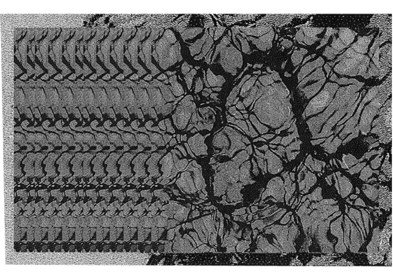

Dreams, Design Fiction, 2017.
30 × 20 cm.
"2035, the dream recording machine was invented."
The trace of dreams in our memory is ambiguous : shapes are blurred and unclear, sometimes making it impossible for us to distinguish the real from the false. Everything is organic, elusive and moving. All the visuals are
generated from the same original image. Details and overviews make up an infinite number of landscapes. Like
dreams, between slides and irregularities, repetitive, slow, calm or violent.